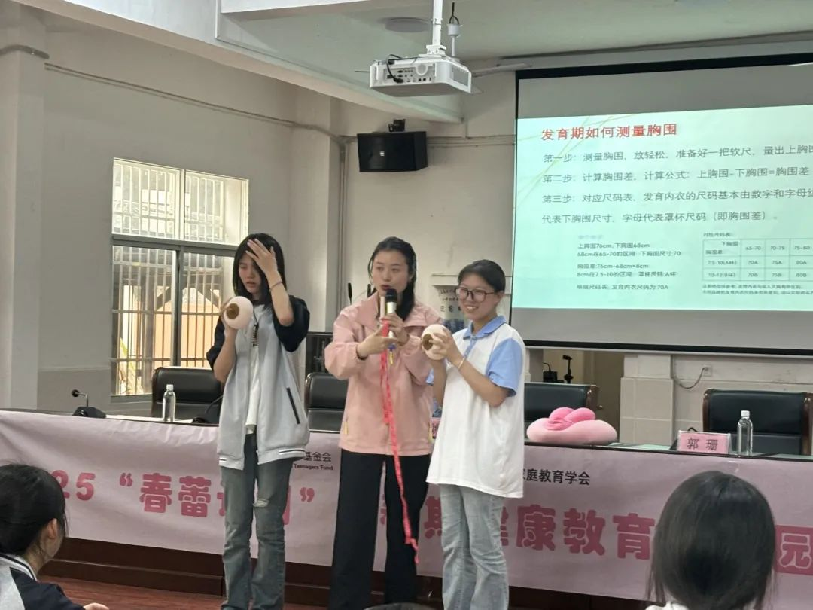
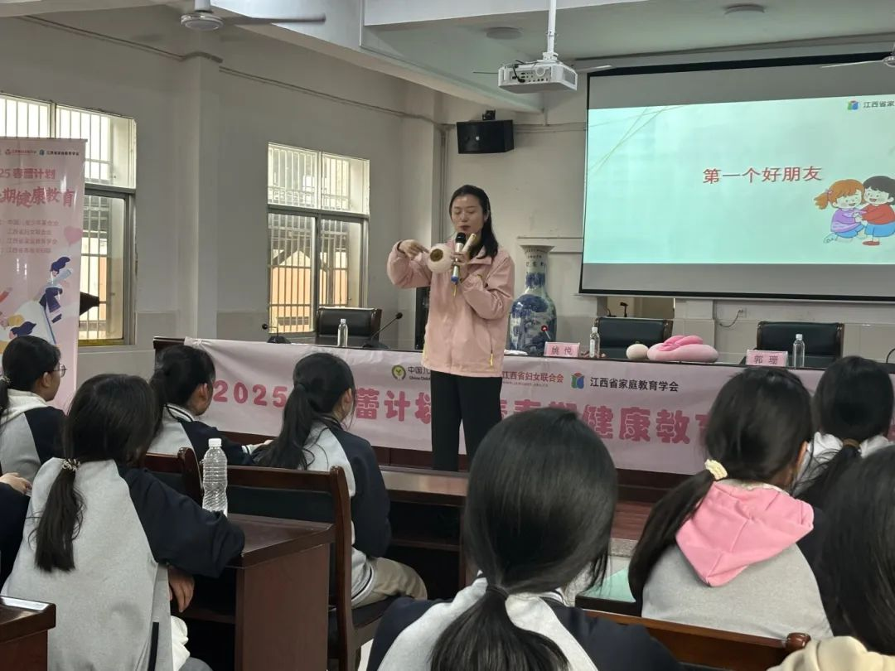

4月8日下午，“春蕾计划”青春期教育讲座在资溪县第二中学温馨开讲。本次讲座特邀江西省家庭教育学会讲师、家庭教育指导师姚悦老师，为初中女生们带来了一场关于“青春期成长、自我保护与心灵成长”的暖心课堂。女孩们认真聆听，积极互动，在欢笑与思考中收获了成长的智慧。
01.认识自己——青春期的生理与心理变化
姚悦老师以亲切的语言开场：“亲爱的女孩们，青春期是生命赠予我们的一份礼物，它让我们从稚嫩走向成熟，但也伴随着许多变化和困惑。” 姚老师用生动的比喻讲解女生青春期的生理变化，一是身体发育，乳房发育、月经来潮、身高增长，这些都是健康的标志，不必害羞或焦虑。 二是月经小知识，如何选择卫生用品？痛经怎么办？姚老师强调：“月经是女性健康的晴雨表，要学会记录周期，遇到异常及时告诉妈妈或医生。”
其次，心理变化并不可怕，青春期女生容易情绪波动，姚老师说一是要接纳情绪，烦躁、敏感、偶尔的小脾气都很正常，这不是“作”，而是激素在调皮。二是要学会倾诉，可以和信任的朋友、家人或老师聊聊，也可以写日记、听音乐来调节。

02.与异性相处——尊重与界限
青春期的你们，可能会对异性产生好奇或好感，这很正常，但如何把握相处的分寸呢？”姚老师通过情景模拟，引导女生们思考：一是自然大方：不必刻意疏远或过度亲密，像对待同性朋友一样保持礼貌和尊重。二是明确界限：避免单独相处在私密空间，不随意接受贵重礼物或暧昧言语。三是辨别“喜欢”与“好感”。
姚老师温柔提醒：“少女时代的心动像一颗糖，甜蜜却易融化。真正的喜欢是彼此尊重、共同进步，而不是冲动或妥协。”

03.守护自己——预防性侵与自我保护
“女孩们，你们如花般珍贵，但世界并非全是阳光。学会保护自己，是成长的重要一课。”
姚老师通过案例讲解，不当触碰、言语骚扰、强迫观看隐私内容等都属于性侵害，无论对方是陌生人还是熟人。预防与应对方法拒绝沉默，如果有人让你不舒服，勇敢说“不”，第一时间告诉父母或老师。安全守则不单独赴约陌生环境，夜晚外出结伴而行，警惕网络交友陷阱。
讲座尾声，姚老师播放了一段励志视频，画面中的女孩们自信奔跑、勇敢追梦。她动情地说：“真正的美丽，不是别人的评价，而是你对自己的珍视。爱护身体，像对待珍宝；坚定内心，像守护城堡；欣赏自己，像仰望星空。因为你本就独一无二。”
本次“春蕾计划”讲座在掌声中圆满结束，但女孩们的成长之旅仍在继续。愿每一位女生都能：懂生理，知心理，科学面对变化；有界限，会拒绝，安全与人相处；爱自己，信自己，活出最灿烂的自己。
本文来源：点击查看原文